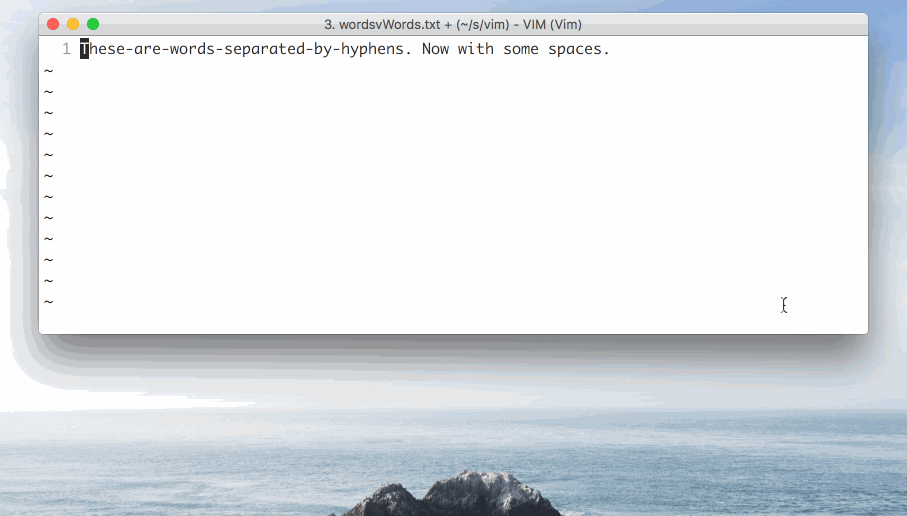

Introduction
Work
Vim user
What are we doing here?
How many people use Vim?
Not a Vim tutorial
Is Vim worth learning?
Don't care at all?
Emergency Guide
- :w => write/save file
- :wq => write/save file and quit
- :q! => quit without saving
Rethinking best practices
Insert
Visual
Command
Insert
Press "i"
Normal Text Editor
Visual
Press "v"
"Mouse" mode
Command
Press "c"
Menu and Other Options.
Movements
-
Small step
h, j, k, l
-
Big step
h, j, k, l
-
Bigger step
2w, 4e, 6b
Actions
___ a word
- daw
- caw
___ ___ ___
- da"
- di"
- dit
Add numbers
- 1, ctrl+a
- 1, ctrl+x
DRY
- . (period)
Registers
Bookmark
- m + (letter) => set bookmark
- ' + (letter) => go to bookmark
Yanking
- " + (letter) + yy
Expression Register
- ctrl + r, =
- Back of the envelope calculations
- :let i = 1
Macros
- q + (letter) => start recording
- @ + (letter) => run macro
- Example: Create a list
- Example: Add class to HTML
~/.vimrc
Customization
Pre-built Customizations :(
Github
Resources
vimtutor
vimgifs.com
Practical Vim - Edit Text at the Speed of Thought
Vim Cheat Sheet


Thank you
npm install anthonyng